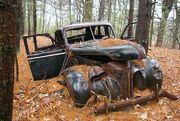

The Wendigo. A creature from the mythology of Native Americans that lived in the region of the northeastern United States and southeastern Canada. It's born from pure cannibalism, and its hunger is never satisfied. There are a lot of stories surrounding the mysterious 13 Mile Woods of northern New Hampshire. I've heard stories of hunting parties starving out there, and resorting to cannibalism. There's no telling what happens out there. This story was told to me by my grandfather, who met one of the people involved.
The year was 1957. His name was Arnold Watson. He loved to hunt, and he loved even more to take long hunting trips in the woods. Of course, he never went alone. He had a couple old friends he'd take along, Andy Johnson and Darrel Trembel. He hadn't seen them in years, so they all decided to go on a week long hunting trip. They packed up all their stuff; hunting rifles, blankets, tents, matches, a week's worth of ammunition and food.
The three of them piled into Arnold's Chevy pickup truck. The ride through the winding dirt roads was long and bumpy. They were deep into the woods now. Then the engine started making clicks and sputtering noises, like it was breaking down. It slowed to a stop.
"Start, goddammit!" said Arnold as he banged on the wheel.
"Did you fill 'er up before we left?" asked Andy.
"I musta forgotten," Arnold said as he sighed and sat back in his seat, "we might as well make camp near here, but I don't wanna get too far from the truck."
So they ventured in the woods a bit, and found a small clearing near a river where they could set up their tents. It was already getting dark, so they started a fire, had a little something to eat, and went to bed. They slept with their guns at their bedside, just in case. They all slept soundly through the night.
Arnold was the first to awake. He stood up and stretched, letting out a long yawn. He stepped outside of the tent and rubbed his eyes. He couldn't believe what he was seeing. A bear had come and tossed everything about, and eaten almost all of their food. Arnold ran into his tent, grabbed his rifle and aimed at the bear. His running around had already startled the bear, and it had gotten away before Arnold could get a clear shot.
"Andy! Darrel! Get up! Damn bear's gotten at our food!" Andy and Darrel scrambled up.
"What in the hell are you-" Darrel stared, open mouthed, at the remaining scraps of their food.
Most of the shotgun shells had been thrown into the river, and only a few usable shells remained.
"Holy shit, what are we gonna do now? We ain't got nuthin! No food, no ammo, no-"
He was cut off by Andy, "Just keep calm Darrel! I think there's more ammo in the truck..." he trailed off.
"Do you guys remember the way back to the truck?" Arnold asked nervously.
"I think it's this way... or, no, this way... well, it might've been this way..." said Andy.
Darrel smacked his hand on his face.
"You ain't got a damn idea what your talkin' 'bout!" Darrel and Andy both lunged at each other and started wrestling, cursing in between breaths.
"Hey, hey, hey, hey! Stop that!" Arnold pulled Darrel off of Andy.
"We gotta get along. We're in a survival situation now. Ain't no fun and games. We could easily die out here and no one would ever find us. Our best bet would be to follow the river. Maybe we could find a town, or a trading post, or somethin'."
Darrel snapped, "A town? Out here? My ass. We're all alone out here. We'll never find our way out!" Andy's always been the weak one. Not very surprising that he'd be the first one to break.
They wandered along the banks of the river for a bit, cold and hungry. Night came, but they didn't stop. Sounds started to come from the woods next to the river, like twigs snapping and leaves crunching. Andy perked right up. "What the hell was that?" Andy whispered nervously.
"Probably just a rabbit, ya wuss," Darrel snapped, "don't be so worrisome."
A couple minutes passed, and Andy sat down to rest.
"I'll just be a minute, go on without me," he panted.
"You sure?" Arnold asked.
"Yes. I won't be long," Andy assured. So they continued. A bloodcurdling scream filled the air several seconds later:
"DAAAAAAAARRRRRRRELLLLLLLLLLLLL!!!! AAAAARRRRRGHHHHHH!!! HELP MEEEEEEE-"
The scream cut off quickly to gurgling and sounds of something eating... Arnold and Darrel ran back along the stream, screaming Andy's name. They heard a snarl and saw the silhouette of a tall, thin, snouted figure, with something dripping from its mouth. It growled at them loudly and trodded of into the woods.
"What in the Lord's name was that?" asked Darrel.
"How am I supposed to know? Strike a match so we can find Andy!" Darrel struck the match and looked in horror. Andy's mangled remains lay on the ground.
His face has half devoured, with his skull showing. Blood and flesh covered his face. A whole section was torn out of his chest, his ribs were picked clean. His entrails were out and laying all over him, partly eaten. His thighs were ravaged. There were parts where his bone was showing in his leg. Worst of all, a horrifying expression was displayed on his face . Like he was frozen in time as soon as he saw the creature.
"Oh my God..." Darrel started mumbling gibberish, curled into a ball and rocked slowly.
"Why him? Why?" he stuttered.
Arnold tried to comfort him, but he was hysterical. "We gotta keep moving, buddy. We both loved him, but it's done now and we gotta move on-" Darrel cut him off.
"How could you say that? You act like you don't even care about him. I loved him like a brother. You don't even care. You don't even care! You selfish bastard!" Darrel lunged at Arnold's throat.
He gripped it tightly against the ground. Arnold struggled to get out of his grip. He kneed him in the stomach, and Darrel fell to the ground. Arnold started pounding him in the face, Darrel was helpless. Arnold picked him up and threw his head against a tree. Darrel slumped to the ground, leaving a thick streak of crimson blood going down the tree. His eyes turned black and he was crazed with bloodlust. Arnold started chewing on Darrel's left arm, but then he snapped out of it.
"What... what have I done?"
He looked at his blood covered hands. He stayed there with the bodies, not sleeping, just sitting, with a blank expression, thinking of what he'd done. Eventually, Arnold realized it was his duty to get back to a town and tell people what had happened.
He got up and started walking. He walked for hours. Then the twig snapping came back, and the leaves crunching. He felt a warm breath on the back of his neck. He turned around, slowly, and towering over him was the beast.
Glowing yellow eyes, antlers and a body that seemed half rotted. The ribcage was exposed, with rotted flesh in and around it. Blood and flesh dripped from his mouth, his face covered in raw muscle and deep cuts. In areas that weren't rotted, like his back and shoulders, were carpeted in short, patchy, light brown fur. One of its arms was completely rotted to the bone. Arnold screamed and ran, but it leapt and tackled him. It growled in his face and bit a chunk from his leg. Arnold screamed in agony, trying to escape from under it, and squirmed and kicked until he got free, and tried to start punching it.
This only angered it more. It lunged at him again, but this time Arnold moved out of the way and the beast tumbled into the river. Arnold saw his chance. He tried his best to limp over to the river, where it was recovering from the fall. Despite the excruciating pain, he tackled the beast and pushed all his weight onto its head, trying to drown it. It snarled under the water and flailed its arms and legs, but Arnold kept his grip. It slowly became weaker and weaker, until it silenced completely. Arnold sighed in relief and fell on his back onto the bank of the river.
He rested for awhile, and tried to move on. He limped through the woods until morning, and he found a road. Thank God, he thought, it's almost over... Arnold was on the road for only a short time, before a truck came along. It pulled over and the man scrambled out of the driver's seat and helped Arnold.
"Jesus, man, what happened?"
Arnold replied tiredly, "I'll... Explain... Soon... Water... A ride... Please..."
The man looked befuddled.
"Of course, of course. Let me help you into the car." Arnold climbed in and took a big long swig of water from the man's bottle.
He told the entire story to the man, the same one I just told you. That man was my grandfather. Arnold was taken to a hospital, but died due to an infection in the wound on his leg.
Every once in a while, hunters will come back with stories of hearing loud, bloodcurdling screams, or similar stories of cannibalistic beasts. Whether they're true or not, there's something lurking in the 13 Mile Woods. If you ever decide to take a trip there, and you find an old 50's truck or an abandoned campsite, turn back. For God's sake, turn back. And if you don't, God help you.